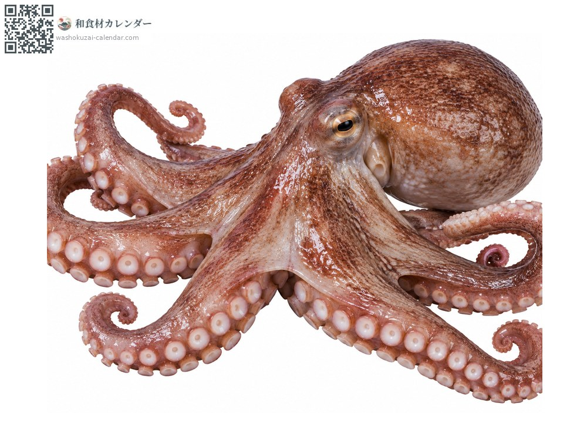
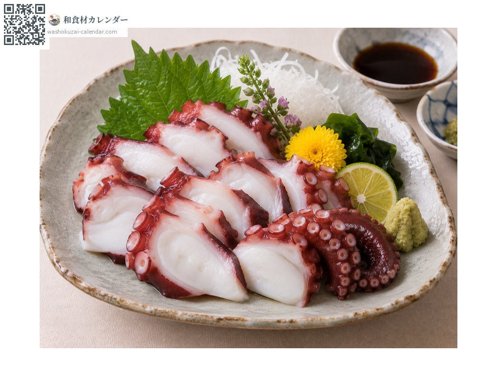
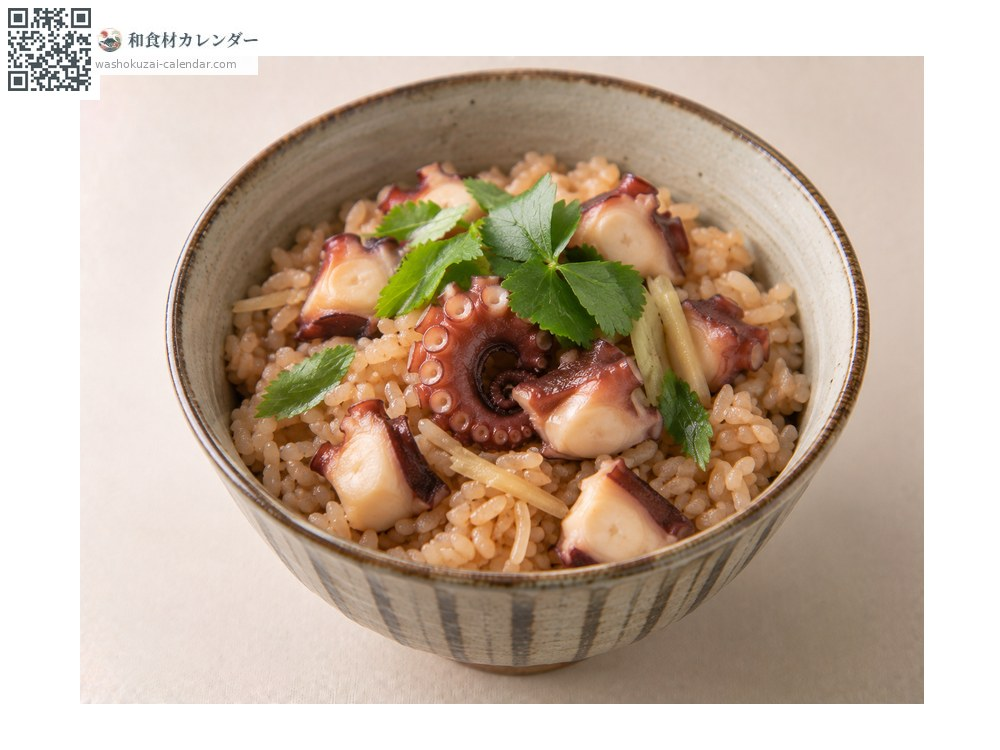
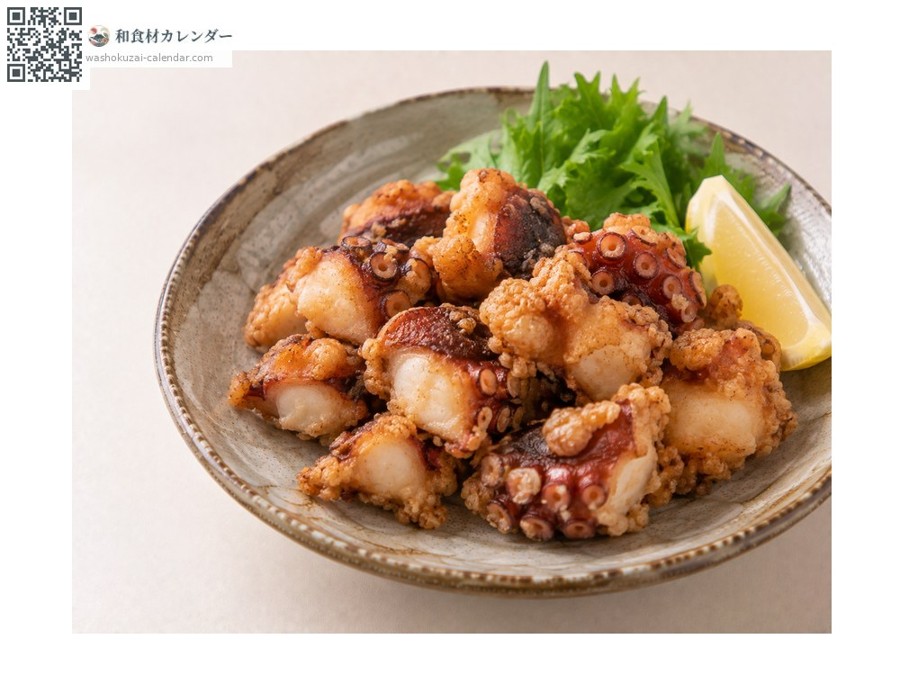
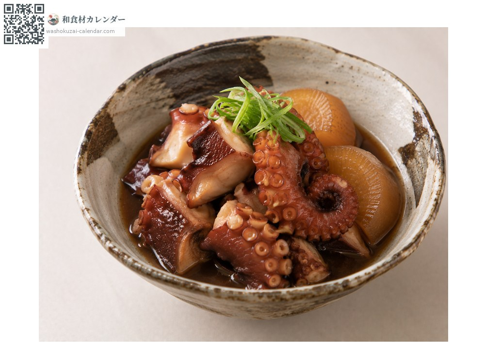

Seafood
Common octopus
マダコ まだこ madako
Also known asmadako, tako
At its best in Jun, Jul, Aug

When it is at its best
Jan
Feb
Mar
Apr
May
Jun
Jul
Aug
Sep
Oct
Nov
Dec
In seasonAvailable
How to cook

Boiled octopus
Rub with salt before boiling. Used for sashimi or vinegared dishes.

Octopus rice
Cooked together with rice.

Karaage (marinated and deep-fried)
Marinated, then deep-fried.

Slow-simmered until tender
Simmering with daikon helps tenderise it.
How to choose
Large, evenly sized suckers. Fresh octopus should be firm and deeply coloured.
Storage
Boiled octopus keeps two to three days refrigerated, and freezes well.
Main areas
Good to know
Akashi in Hyogo is especially known. Strong currents give the octopus thick legs and firm flesh.